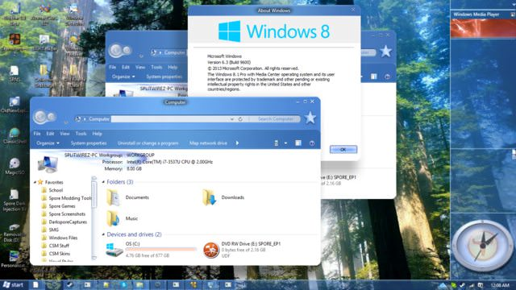

| Classic Shell http://www.classicshell.net/forum/ |
|
| Full transparency without blur/glass http://www.classicshell.net/forum/viewtopic.php?f=13&t=7323 |
Page 1 of 1 |
| Author: | tekett [ Tue Feb 07, 2017 5:11 pm ] |
| Post subject: | Full transparency without blur/glass |
i want metro with complete transparency, exactly like the taskbar, but all i can find is skins with partial transparency and searched comes up blank, google show just gives me stuff about taskbar related things or just partial transparency about the androidy looking default start menu. is it possible to make the title bar transparent as well as other things? basically i want as much as transparency as possible, and make my selections and what not look like this http://prnt.sc/e5vlds |
|
| Author: | Gaurav [ Tue Feb 07, 2017 9:17 pm ] |
| Post subject: | Re: Full transparency without blur/glass |
Which Windows OS are you using and which style of the menu and skin? Do you want full transparency without glass/blur in the Start Menu and Taskbar? Title bar customization is outside the scope of Classic Shell. |
|
| Author: | Splitwirez [ Wed Feb 08, 2017 7:09 am ] |
| Post subject: | Re: Full transparency without blur/glass |
In Windows 7, the "hideBlur" registry option will do the trick. On Windows 8.1+, WinaeroGlass can achieve the same effect. On Windows 10, Aeroglass 8.1+ for Windows 10 can get pretty close if you set the settings right. Hope that helps ^-^ EDIT: May as well throw in that such tools can also be used to do stuff like this:  (note the lack of side borders) |
|
| Page 1 of 1 | All times are UTC - 8 hours [ DST ] |
| Powered by phpBB® Forum Software © phpBB Group https://www.phpbb.com/ |
|
{kind=link}